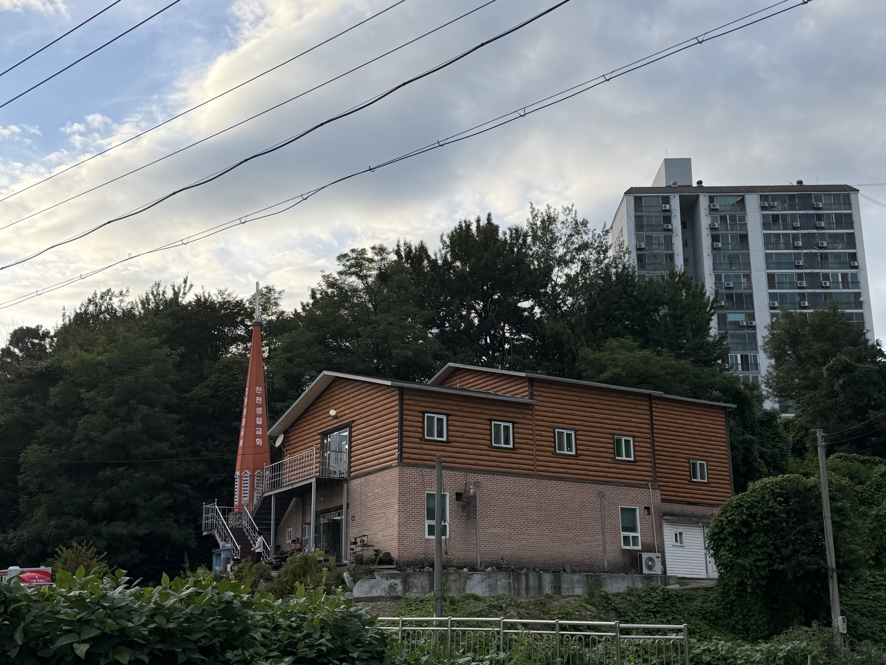

2026 진천교회 표어
서로 세우며 함께 성장하는 공동체
“우리가 다 하나님의 아들을 믿는 것과 아는 일에 하나가 되어 온전한 사람을 이루어 그리스도의 장성한 분량이 충만한 데까지 이르리니”에베소서 4:13
01 믿음과 지식의 하나됨
말씀 안에서 함께 배우고 믿음으로 하나 되는 공동체를 세워갑니다.
02 온전한 성숙
그리스도를 닮아 삶과 신앙이 함께 자라가는 성숙을 추구합니다.
03 그리스도의 충만한 분량
교회와 가정, 삶의 자리에서 그리스도의 사랑을 나타냅니다.

WELCOME TO JINCHEON CHURCH
진천교회를
소개합니다
진천교회는 기독교대한성결교회 청주지방회에 속한 교회로 2004년 10월 24일 첫 예배를 시작하였습니다.
교회의 비전은 하나님을 알고, 믿으며, 하나님의 나라를 확장하는 것입니다. 예수 그리스도 안에서 깊은 교제를 나누며 서로를 격려하고 지지하는 사랑의 공동체를 이루어 갑니다.
예배 안내
진천교회 예배의 자리에 여러분을 초대합니다.
주일예배 1부주일 오전 9시
주일예배 2부주일 오전 11시
주일 오후예배주일 오후 1시
예닮어린이예배주일 오전 11시
수요기도회수요일 저녁 7시
새벽기도회새벽 5시
말씀 · 설교
말씀으로 믿음을 세우고 삶으로 복음을 살아갑니다.
RECENT SERMON
최근 설교 영상
진천교회 주일예배 설교를 이곳에서 만나실 수 있습니다.
유튜브 채널 주소를 연결하면 최신 설교 영상을 바로 재생하도록 구성할 수 있습니다.
교회 소식
진천교회의 새로운 소식과 예배 안내입니다.
주일예배 안내
매주 주일 오전 9시와 11시에 함께 예배드립니다.
온라인 주보
매주 주보를 홈페이지에서 확인할 수 있도록 준비합니다.
교회 행사
예배와 교회 행사 소식을 이곳에서 안내합니다.
다음세대
믿음의 다음세대를 말씀과 사랑으로 세웁니다.
예닮어린이예배
주일 오전 11시, 어린이들이 말씀 안에서 예배하며 믿음으로 성장합니다.
함께 자라는 공동체
가정과 교회가 함께 다음세대의 신앙 성장을 돕는 공동체를 지향합니다.
지역사회를 섬기는 교회
복음과 사랑으로 이웃을 섬깁니다.
나눔재가노인복지센터
나눔장애인활동지원센터
사랑나눔지역아동센터
진천나눔과기쁨푸드뱅크
사랑나눔작은도서관
나눔복지센터